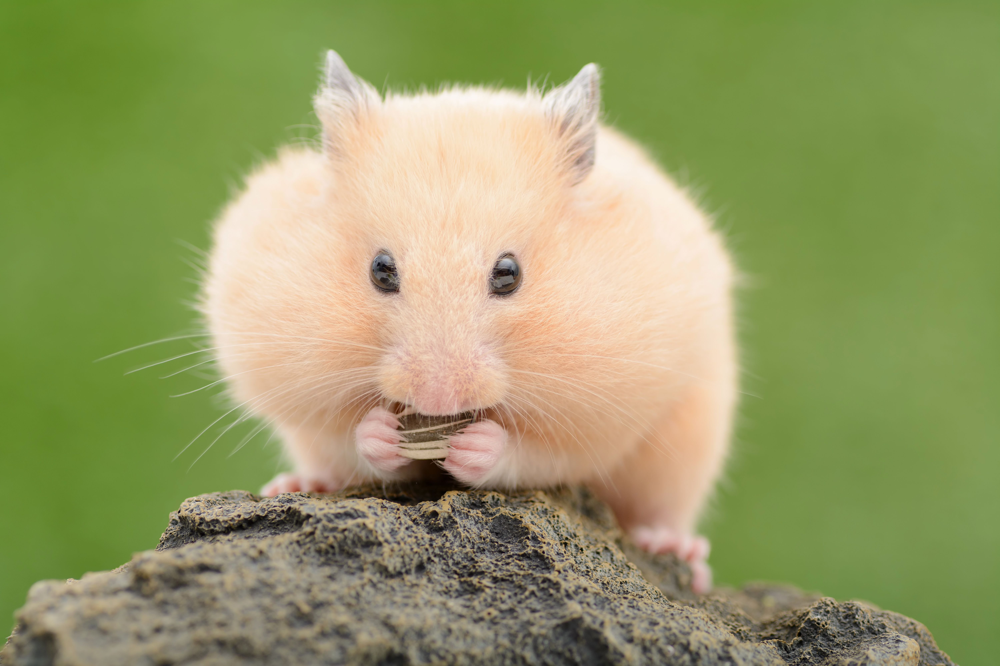
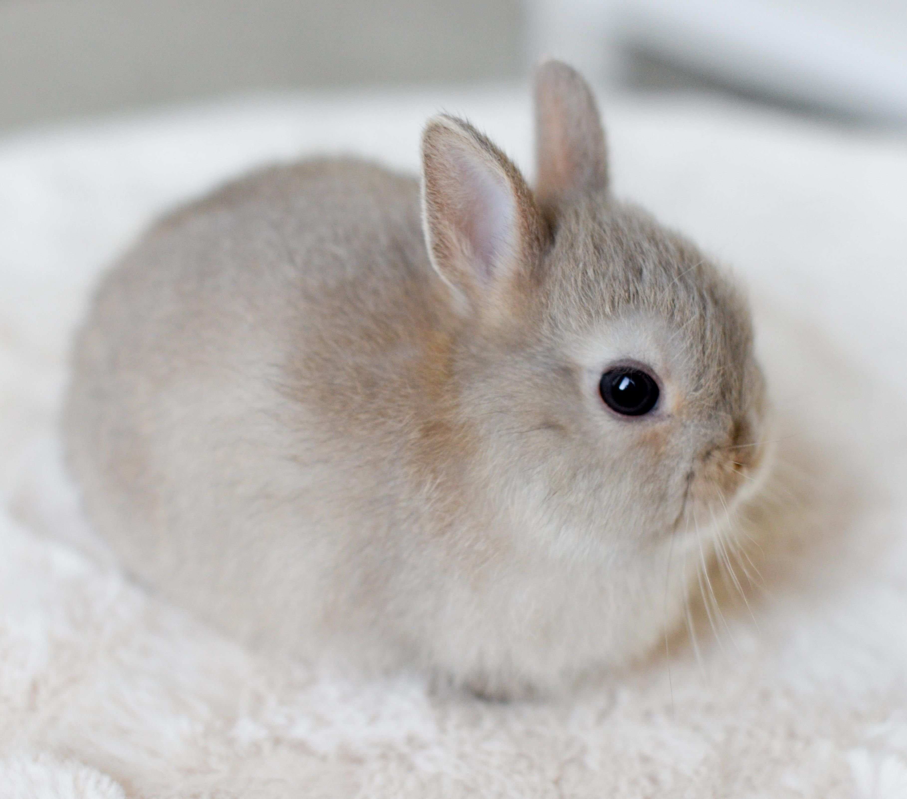

Ко́шка (лат. Felis catus) — домашнее животное, одно из наиболее популярных (наряду с собакой) «животных-компаньонов»

сиамская, сфинкс, шатландская.
Соба́ка (лат. Canis familiaris, или Canis lupus familiaris) — домашнее животное, одно из наиболее популярных (наряду с кошкой) животных-компаньонов.

овчарка, бульдог, корги
Хомяки́ (лат. Cricetinae) — подсемейство грызунов семейства хомяковых. Включает 19 видов, относящихся к семи родам. Стали популярными домашними питомцами. Самым известным видом хомяка является золотой или сирийский хомячок (Mesocricetus auratus), который чаще всего используется в качестве домашних животных. Другими видами хомяков, которых обычно держат в качестве домашних животных, являются три вида хомячков, хомячок Кэмпбелла (Phodopus campbelli), джунгарский хомячок (Phodopus sungorus) и хомячок Роборовского (Phodopus roborovskii).
китайские, джунгарские, сирийские
Домашний кролик (лат. Oryctolagus cuniculus domesticus) — одомашненная разновидность европейского дикого кролика. Домашние кролики отличаются от своих диких предков многообразием размеров, окрасов, структурой шерсти. Карликовые кролики могут весить меньше 1 кг, особи крупных пород кроликов достигают массы 10-11 кг. Человек использует домашних кроликов в качестве домашних питомцев и для получения мяса, шкуры и пуха.
серый, чёрно-бурый, бельгийский фландр